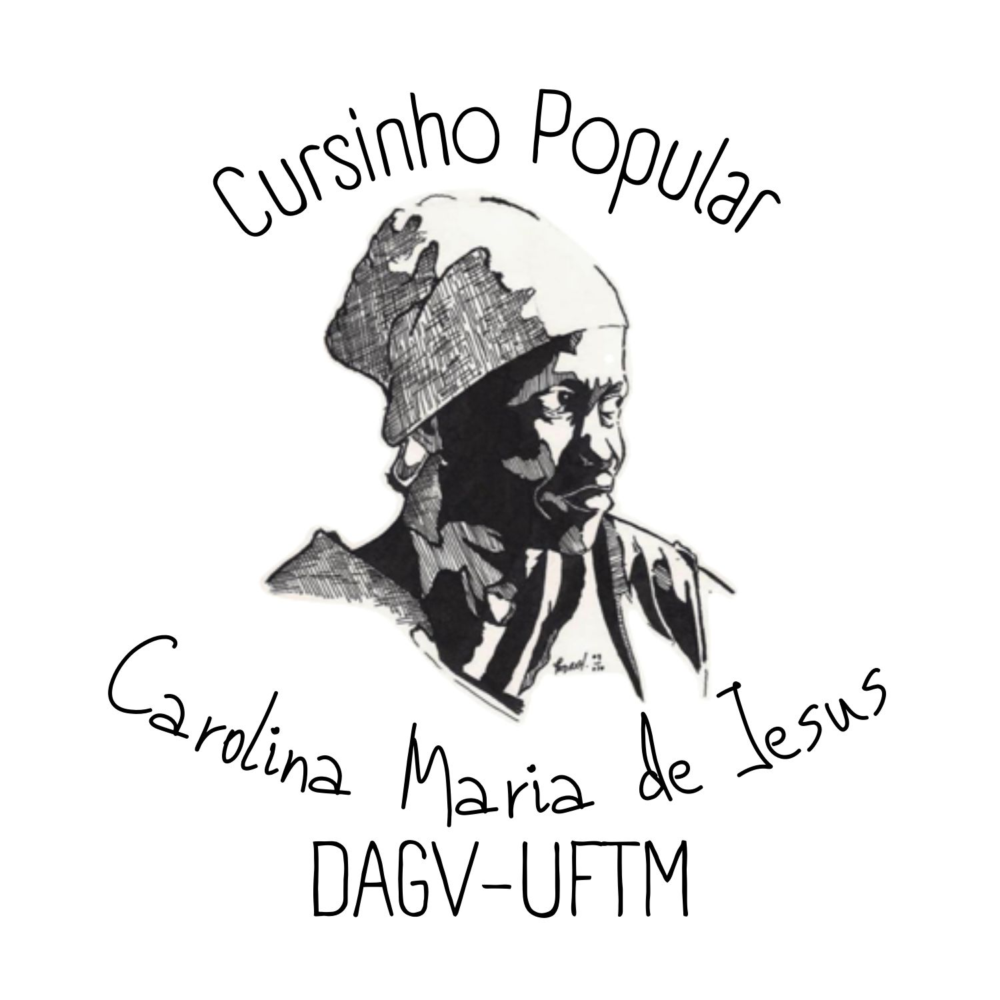

Cursinho Carolina
Curso Popular Carolina Maria de Jesus: preparação gratuita para o ENEM e vestibulares, organizado majoritariamente pelo DAGV para democratizar o acesso ao ensino superior público.
Sobre o Cursinho

O Curso Popular Carolina Maria de Jesus da UFTM é um cursinho que oferece preparação gratuita para o ENEM e vestibulares. Configura-se como um projeto de extensão da UFTM, organizado majoritariamente pelo Diretório Acadêmico Gaspar Vianna (DAGV), com o objetivo de democratizar o acesso ao ensino superior, oferecendo educação de qualidade para alunos da rede pública.
Sabemos como o ingresso nas universidades públicas é cada vez mais concorrido, e como muitos não possuem recursos para pagar por uma preparação em cursinhos privados. Assim, o projeto nasce do desejo de mudar realidades a partir do acesso ao ensino superior público e de qualidade — pensado para oferecer um ensino preparatório e emancipador aos egressos do ensino público de Uberaba e região.
Fundado em 2023 por membros do DAGV, o cursinho é administrado voluntariamente por discentes da UFTM. Anualmente é aberto edital para seleção de professores, monitores e tutores (com certificação de horas de extensão) e, separadamente, para seleção dos alunos — divulgada nas escolas públicas de Uberaba e no Instagram do projeto. As aulas acontecem no período da noite, de segunda a sexta-feira, no espaço da universidade.
@cursinho.carolina.uftm no InstagramMatérias Oferecidas
Aulas ministradas por alunos de graduação da UFTM, com equipe de monitores para tirar dúvidas e orientar os estudos.
O cursinho também oferece material de estudo e apoio, principalmente aos alunos menos favorecidos. Os livros pré-vestibulares vêm do Sistema Gabarito (@gabaritouberaba e @gabaritoeducacao), apoiador do Cursinho, com conteúdo teórico, exercícios, materiais extras e simulados.
Quem Pode Ingressar?
Quem foi Carolina Maria de Jesus

Carolina Maria de Jesus (Sacramento, 14 de março de 1914 – São Paulo, 13 de fevereiro de 1977) foi uma escritora, cantora, compositora e poetisa brasileira. Uma das primeiras escritoras negras do Brasil, é considerada uma das mais importantes escritoras do país. Viveu boa parte da vida na favela do Canindé, em São Paulo, sustentando a si mesma e seus três filhos como catadora de papéis.
Apesar de ter apenas dois anos de estudo formal, tornou-se escritora e ficou nacionalmente conhecida em 1960, com a publicação de Quarto de despejo: diário de uma favelada, no qual relatou seu dia a dia na favela. O livro traz as memórias de uma mulher negra e favelada que via a escrita como forma de sair da invisibilidade social em que se encontrava.
Biografia
Nasceu em 1914, em Sacramento (MG), numa comunidade rural, filha de pais negros. Por ser pobre, teve apenas dois anos de educação formal. Em 1937, após a morte da mãe, migrou para São Paulo, onde construiu sua própria casa com madeira, lata e papelão, e trabalhou como empregada doméstica. Em 1947, instalou-se na extinta favela do Canindé, onde nasceram seus três filhos.
Apaixonada pela leitura e pela escrita, foi apenas em 1958 que o jornalista Audálio Dantas descobriu seus diários sobre a realidade da favela e ajudou a publicá-los. Em 1960, Quarto de despejo se tornou um sucesso de vendas, traduzido para vários idiomas e hoje conhecido em cerca de 40 países. A autora recebeu homenagens da Academia Paulista de Letras e virou nome de rua e de biblioteca, consolidando um lugar de destaque na literatura e na história nacional.
Conheça Nossa Equipe
Os voluntários por trás do Cursinho Popular Carolina Maria de Jesus.


Quer fazer parte do Cursinho Carolina?
Inscreva-se na lista de espera e venha estudar com a gente.